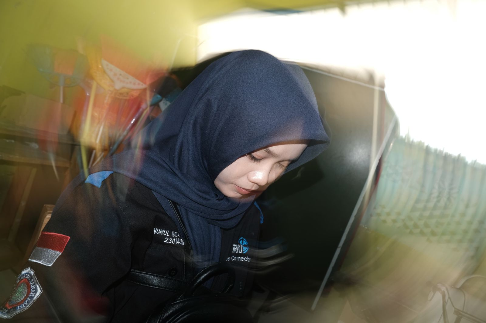
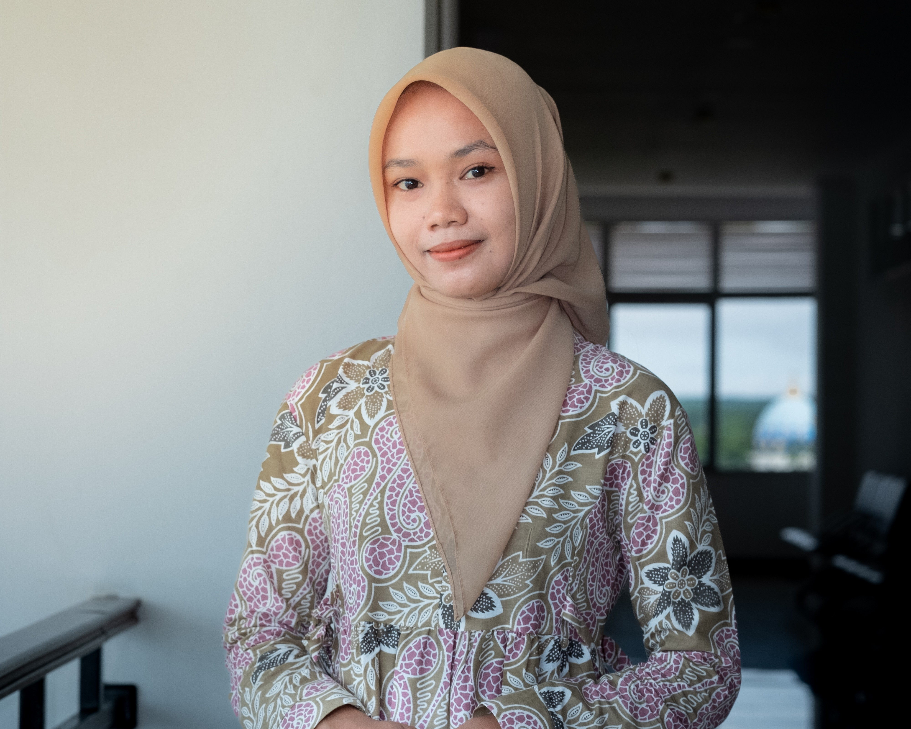
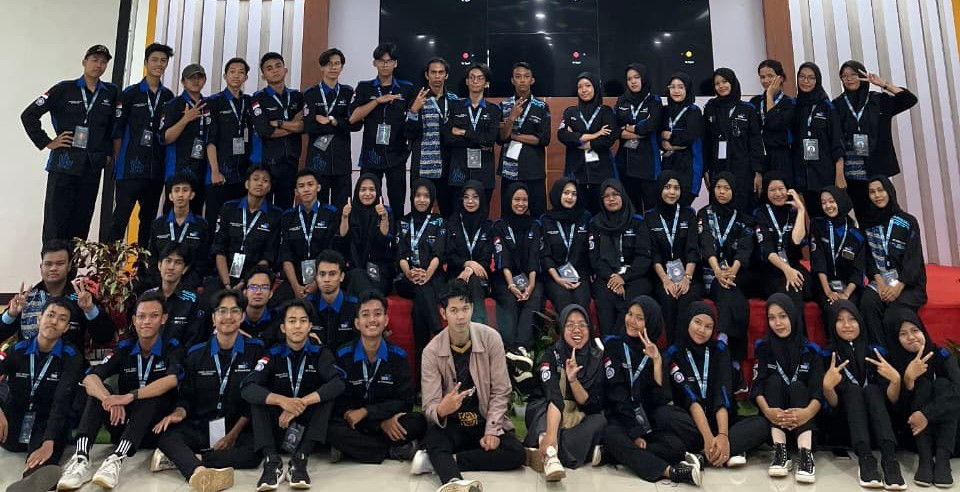
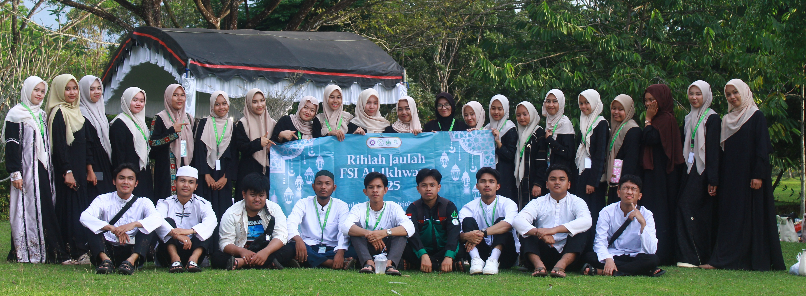
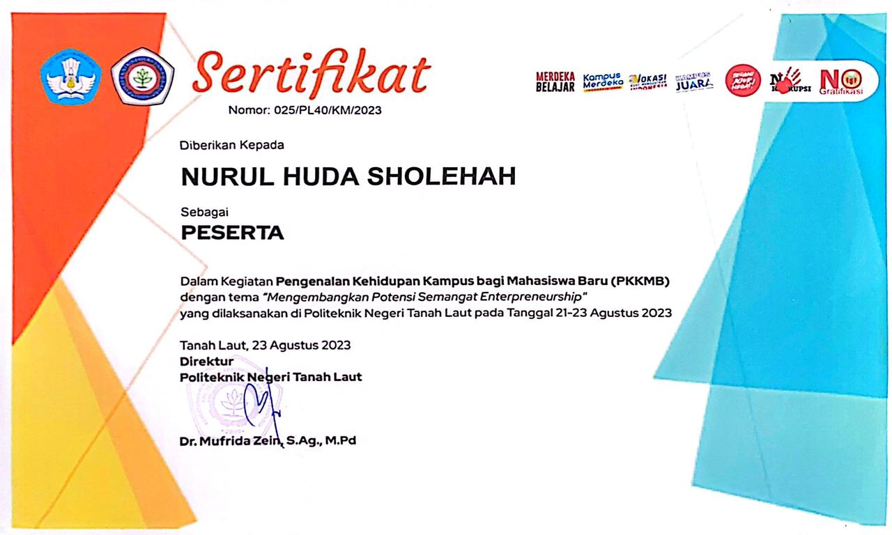
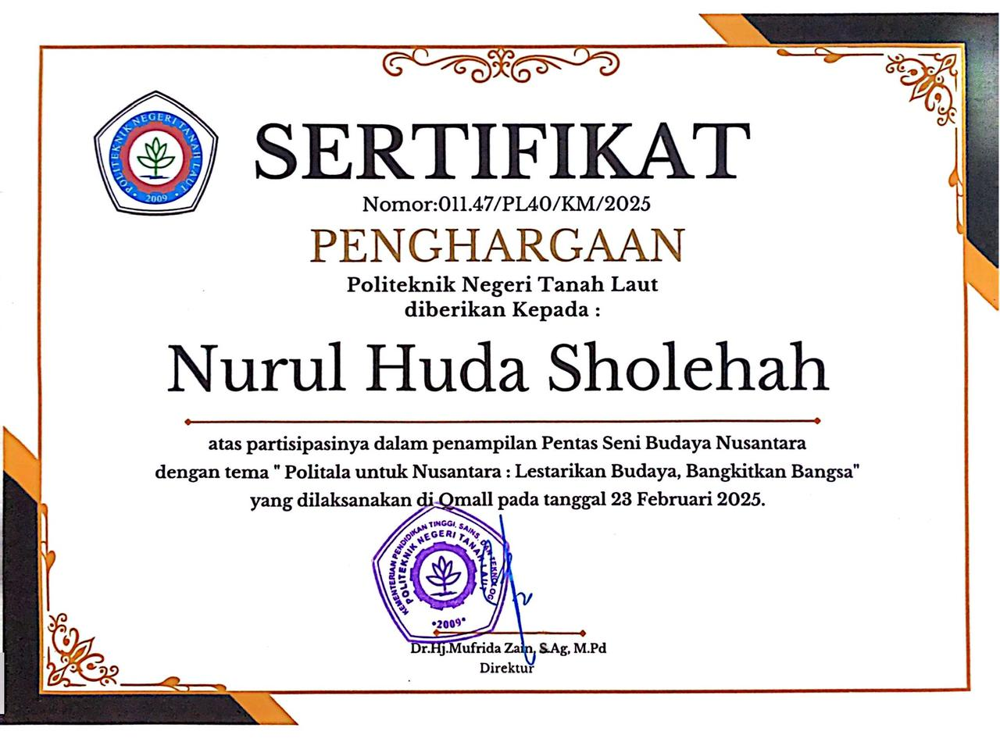
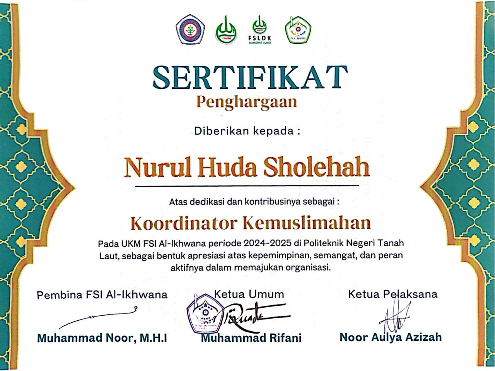
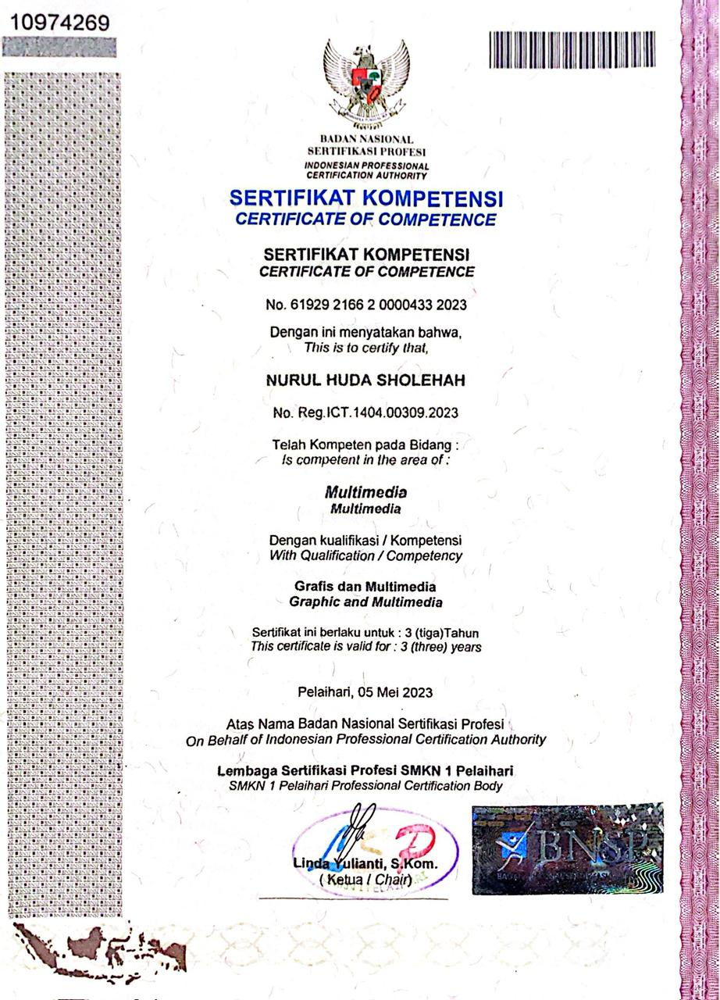

Saya adalah mahasiswi aktif jurusan Teknik Rekayasa Komputer dan Jaringan (TRKJ) di Politeknik Negeri Tanah Laut yang memiliki minat di bidang jaringan komputer, instalasi perangkat, serta analisis sistem.
Dikenal sebagai pribadi yang teliti, saya memiliki semangat belajar tinggi untuk terus mengikuti perkembangan teknologi terbaru di dunia IT.
Tanah Laut, Kalsel
Network Engineering


.png)
.jpg)
.jpg)
.png)

D4 Teknik Rekayasa Komputer Jaringan
Jl. Ahmad Yani No.Km.06, Pemuda, Kec. Pelaihari, Kabupaten Tanah Laut, Kalimantan Selatan 70815
Teknik Komputer Jaringan
Komplek Perkantoran, Jl. Gagas Permai, Angsau, Kec. Pelaihari, Kabupaten Tanah Laut, Kalimantan Selatan 70815
Jl. Datu Insyad, Angsau, Kec. Pelaihari, Kabupaten Tanah Laut, Kalimantan Selatan 70814
Tirtajaya, Kec. Bajuin, Kabupaten Tanah Laut, Kalimantan Selatan 70814
Badan Kepegawaian dan Pengembangan Sumber Daya Manusia↗
Lihat Dokumentasi ➔
Hima TRKJ Politala | 2025
Bertanggung jawab dalam menjalin komunikasi eksternal dan mengelola informasi strategis bagi Himpunan Mahasiswa Teknologi Rekayasa Komputer Jaringan.

Politala | 2025
Berkontribusi dalam media informasi kampus dan menyalurkan aspirasi mahasiswa melalui berbagai kanal komunikasi resmi Politeknik Negeri Tanah Laut.

UKM FSI Al-Ikhwana | 2025
Memimpin dan mengoordinasi berbagai program kerja khusus kemuslimahan guna mempererat ukhuwah dan meningkatkan wawasan keagamaan di kampus.
Klik untuk Melihat Detail




.jpg)